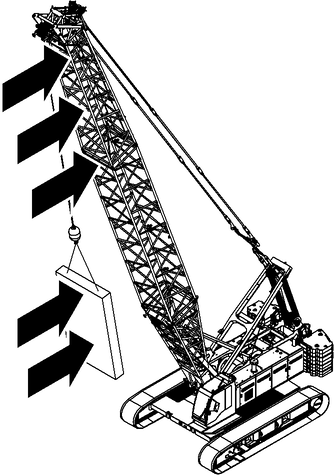
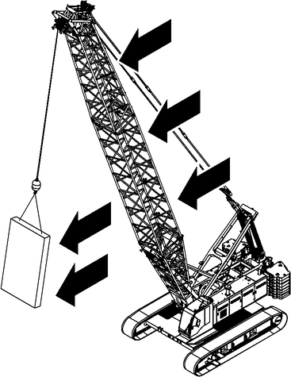
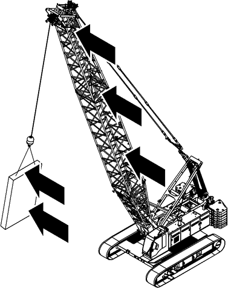

Windeinwirkung

GEFAHR
Lebensgefährliche Windeinwirkung!
Kippen der Maschine, Versagen der Struktur.
Handlungsbezogene und situationsbezogene Sicherheitshinweise beachten. |

GEFAHR
Unzulässiger Betrieb der Maschine bei Überschreiten der maximal zulässigen Windgeschwindigkeit laut Vorwort der gültigen Traglasttabelle!
Kippen der Maschine, Versagen der Struktur.
Sicherstellen, dass Maschine ausschließlich bei zulässigen Windgeschwindigkeiten betrieben wird. |
Bei erhöhten Windgeschwindigkeiten Traglast reduzieren, Ausleger in Parkposition stellen, Ausleger ablegen. (Weitere Informationen siehe: „Einschränkungen durch Windeinwirkung“) |

Hinweis
Folgende Sicherheitshinweise beachten:
Sicherstellen, dass jeder Hub von einer vom Betreiber benannten Person geplant und durchgeführt wird. |
Von jeder Last den geometrischen Formfaktor (Luftwiderstandsbeiwert) und die Projektion der angeströmten Fläche sorgfältig ermitteln und berücksichtigen. |
Beachten, dass die Windgeschwindigkeit quadratisch in die Berechnung der Windbelastung einfließt. Eine geringe Erhöhung der Windgeschwindigkeit verursacht eine enorme Erhöhung der Windlast. |
Beachten, dass Laufstege an Ausleger-Zwischenstücken die Windlast verstärken. |
Beachten, dass Windgeschwindigkeit, Form und Größe der Last einen wesentlichen Einfluss auf die Standsicherheit und die Belastung der Maschine haben siehe: Tab. 200 „Typische Formen und die entsprechenden c w-Werte nach EN 13000 Anhang N“. |
Windverhältnisse am Einsatzort (Geländeprofile und Gebäudeprofile, Bereiche mit Windschatten, meteorologische Daten, relevante Umgebungsbedingungen) sowie die Wetterprognosen für den geplanten Einsatzzeitraum in Erfahrung bringen und berücksichtigen. |
Vor Arbeitsbeginn über den Wetterbericht und die aktuelle Windgeschwindigkeit am Einsatzort der Maschine informieren. Sind in den nächsten Stunden hohe Windgeschwindigkeiten zu erwarten, Maschine nicht in Betrieb nehmen und Schutzmaßnahmen vor Sturmschäden treffen. |
Zulässige Windgeschwindigkeiten und vorgeschriebene Reduktionen der Traglasten im Vorwort der gültigen Traglasttabelle beachten. |
Beachten, dass die in der Traglastberechnung berücksichtigte Windangriffsfläche der Last 1,2 m 2/t beträgt (cw-Wert als Faktor bereits berücksichtigt). Wenn die Windangriffsfläche der Last größer ist: Maximal zulässige Windgeschwindigkeit berechnen oder bei Liebherr-Kundendienst anfragen. Lasten dürfen erst angehoben werden, nachdem diese Bewertung durchgeführt wurde. |
Aktuelle Windgeschwindigkeit am Bildschirm in der Kabine beachten. |
Während dem Drehen des Oberwagens auf mitgemessene Anteile des Fahrtwindes achten. |
Während des Betriebs auf gefährliche Windböen achten. |
Lasten langsam und vorsichtig bewegen und jedes Aufschaukeln vermeiden. |

Fig. 599: Windeinwirkung an der Vorderseite der Maschine und der Last (Prinzipdarstellung)
Fig. 599: Windeinwirkung an der Vorderseite der Maschine und der Last (Prinzipdarstellung)
Windeinwirkung an der Vorderseite der Maschine und der Last hat folgende Auswirkungen:
– | Standsicherheit der Maschine verringert sich. |
– | Kippgefahr der Maschine erhöht sich. |
– | Bei maximalem Hauptauslegerwinkel ohne Last besteht die Gefahr, dass die Rückfallstützen überlastet und der Hauptausleger zerstört wird. |
– | Last schaukelt sich auf und beschädigt oder zerstört den Hauptausleger. |

Fig. 600: Windeinwirkung an der Rückseite der Maschine und der Last (Prinzipdarstellung)
Fig. 600: Windeinwirkung an der Rückseite der Maschine und der Last (Prinzipdarstellung)
Windeinwirkung an der Rückseite der Maschine und der Last hat folgende Auswirkungen:
– | Standsicherheit der Maschine verringert sich. |
– | Kippgefahr der Maschine erhöht sich. |
– | Windlast wirkt wie eine zusätzliche Last am Lasthaken oder Unterflasche. |
– | Schwenkradius vergrößert sich. |
– | Last schaukelt sich auf und beschädigt oder zerstört den Hauptausleger. |

Fig. 601: Windeinwirkung an einer Seite der Maschine und der Last (Prinzipdarstellung)
Fig. 601: Windeinwirkung an einer Seite der Maschine und der Last (Prinzipdarstellung)
Windeinwirkung an einer Seite der Maschine und der Last hat folgende Auswirkungen:
– | Standsicherheit der Maschine verringert sich. |
– | Kippgefahr der Maschine erhöht sich. |
– | Zusätzlicher Schrägzug wird erzeugt. |
– | Versagen der Struktur des Hauptauslegers. |
– | Last schaukelt sich auf und beschädigt oder zerstört den Hauptausleger. |

Hinweis
Zur groben Abschätzung der Windgeschwindigkeiten in maximaler Auslegerhöhe:
Bei zuständigem Wetteramt über die zu erwartende maximale Windgeschwindigkeit informieren. |
Beachten, dass Werte des Wetteramtes gemittelte Windgeschwindigkeiten in 10 m (32.81 ft) Höhe sind. |
Mit gemittelten Werten des Wetteramtes und nachfolgender Tabelle die zu erwartende 3-Sekunden-Böengeschwindigkeit in maximaler Auslegerhöhe ermitteln. |
Sicherstellen, dass Maschine ausschließlich bei zulässigen Windgeschwindigkeiten laut Vorwort der gültigen Traglasttabelle betrieben wird. |
Beaufort Grad | 3 | 4 | 5 | 6 | 7 | 8 | 9 | 10 |
|---|---|---|---|---|---|---|---|---|
v(d) A) |
5.4 m/s 12.1 mph |
7.9 m/s 17.7 mph |
10.7 m/s 23.9 mph |
13.8 m/s 30.9 mph |
17.1 m/s 38.3 mph |
20.7 m/s 46.3 mph |
24.4 m/s 54.6 mph |
28.4 m/s 63.5 mph |
z B) | v(z) C) | |||||||
10 m 32.81 ft |
7.6 m/s 17.0 mph |
11.1 m/s 24.8 mph |
15.0 m/s 33.6 mph |
19.3 m/s 43.2 mph |
23.9 m/s 53.5 mph |
29.0 m/s 64.9 mph |
34.2 m/s 76.5 mph |
39.8 m/s 89.0 mph |
20 m 65.62 ft |
8.1 m/s 18.1 mph |
11.9 m/s 26.6 mph |
16.1 m/s 36.0 mph |
20.7 m/s 46.3 mph |
25.7 m/s 57.5 mph |
31.1 m/s 69.6 mph |
36.6 m/s 81.9 mph |
42.7 m/s 95.5 mph |
30 m 98.43 ft |
8.5 m/s 19.0 mph |
12.4 m/s 27.7 mph |
16.8 m/s 37.6 mph |
21.6 m/s 48.3 mph |
26.8 m/s 59.9 mph |
32.4 m/s 72.5 mph |
38.2 m/s 85.5 mph |
44.5 m/s 99.5 mph |
40 m 131.23 ft |
8.7 m/s 19.5 mph |
12.8 m/s 28.6 mph |
17.3 m/s 38.7 mph |
22.3 m/s 49.9 mph |
27.6 m/s 61.7 mph |
33.4 m/s 74.7 mph |
39.4 m/s 88.1 mph |
45.8 m/s 102.5 mph |
50 m 164.04 ft |
8.9 m/s 19.9 mph |
13.1 m/s 29.3 mph |
17.7 m/s 39.6 mph |
22.8 m/s 51.0 mph |
28.3 m/s 63.3 mph |
34.2 m/s 76.5 mph |
40.3 m/s 90.1 mph |
46.9 m/s 104.9 mph |
60 m 196.85 ft |
9.1 m/s 20.4 mph |
13.3 m/s 29.8 mph |
18.0 m/s 40.3 mph |
23.3 m/s 52.1 mph |
28.8 m/s 64.4 mph |
34.9 m/s 78.1 mph |
41.1 m/s 91.9 mph |
47.9 m/s 107.1 mph |
70 m 229.66 ft |
9.3 m/s 20.8 mph |
13.5 m/s 30.2 mph |
18.3 m/s 40.9 mph |
23.6 m/s 52.8 mph |
29.3 m/s 65.5 mph |
35.5 m/s 79.4 mph |
41.8 m/s 93.5 mph |
48.7 m/s 108.9 mph |
80 m 262.47 ft |
9.4 m/s 21.0 mph |
13.7 m/s 30.6 mph |
18.6 m/s 41.6 mph |
24.0 m/s 53.7 mph |
29.7 m/s 66.4 mph |
36.0 m/s 80.5 mph |
42.4 m/s 94.8 mph |
49.4 m/s 110.5 mph |
90 m 295.28 ft |
9.5 m/s 21.3 mph |
13.9 m/s 31.1 mph |
18.8 m/s 42.1 mph |
24.3 m/s 54.4 mph |
30.1 m/s 67.3 mph |
36.4 m/s 81.4 mph |
42.9 m/s 96.0 mph |
50.0 m/s 111.8 mph |
100 m 328.08 ft |
9.6 m/s 21.5 mph |
14.1 m/s 31.5 mph |
19.1 m/s 42.7 mph |
24.6 m/s 55.0 mph |
30.4 m/s 68.0 mph |
36.9 m/s 82.5 mph |
43.4 m/s 97.1 mph |
50.6 m/s 113.2 mph |
110 m 360.89 ft |
9.7 m/s 21.7 mph |
14.2 m/s 31.8 mph |
19.2 m/s 42.9 mph |
24.8 m/s 55.5 mph |
30.8 m/s 68.9 mph |
37.2 m/s 83.2 mph |
43.9 m/s 98.2 mph |
51.1 m/s 114.3 mph |
120 m 393.7 ft |
9.8 m/s 21.9 mph |
14.3 m/s 32.0 mph |
19.4 m/s 43.4 mph |
25.1 m/s 56.1 mph |
31.1 m/s 69.6 mph |
37.6 m/s 84.1 mph |
44.3 m/s 99.1 mph |
51.6 m/s 115.4 mph |
130 m 426.51 ft |
9.9 m/s 22.1 mph |
14.5 m/s 32.4 mph |
19.6 m/s 43.8 mph |
25.3 m/s 56.6 mph |
31.3 m/s 70.0 mph |
37.9 m/s 84.8 mph |
44.7 m/s 100.0 mph |
52.0 m/s 116.3 mph |
140 m 459.32 ft |
10.0 m/s 22.4 mph |
14.6 m/s 32.7 mph |
19.8 m/s 44.3 mph |
25.5 m/s 57.0 mph |
31.6 m/s 70.7 mph |
38.2 m/s 85.5 mph |
45.1 m/s 100.9 mph |
52.5 m/s 117.4 mph |
150 m 492.13 ft |
10.0 m/s 22.4 mph |
14.7 m/s 32.9 mph |
19.9 m/s 44.5 mph |
25.7 m/s 57.5 mph |
31.8 m/s 71.1 mph |
38.5 m/s 86.1 mph |
45.4 m/s 101.6 mph |
52.9 m/s 118.3 mph |
160 m 524.93 ft |
10.1 m/s 22.6 mph |
14.8 m/s 33.1 mph |
20.1 m/s 45.0 mph |
25.9 m/s 57.9 mph |
32.1 m/s 71.8 mph |
38.8 m/s 86.8 mph |
45.7 m/s 102.2 mph |
53.2 m/s 119.0 mph |
170 m 557.74 ft |
10.2 m/s 22.8 mph |
14.9 m/s 33.3 mph |
20.2 m/s 45.2 mph |
26.0 m/s 58.2 mph |
32.3 m/s 72.3 mph |
39.1 m/s 87.5 mph |
46.0 m/s 102.9 mph |
53.6 m/s 119.9 mph |
180 m 590.55 ft |
10.3 m/s 23.0 mph |
15.0 m/s 33.6 mph |
20.3 m/s 45.4 mph |
26.2 m/s 58.6 mph |
32.5 m/s 72.7 mph |
39.3 m/s 87.9 mph |
46.3 m/s 103.6 mph |
53.9 m/s 120.6 mph |
190 m 623.36 ft |
10.3 m/s 23.0 mph |
15.1 m/s 33.8 mph |
20.4 m/s 45.6 mph |
26.4 m/s 59.1 mph |
32.7 m/s 73.1 mph |
39.5 m/s 88.4 mph |
46.6 m/s 104.2 mph |
54.2 m/s 121.2 mph |
200 m 656.17 ft |
10.4 m/s 23.3 mph |
15.2 m/s 34.0 mph |
20.6 m/s 46.1 mph |
26.5 m/s 59.3 mph |
32.8 m/s 73.4 mph |
39.8 m/s 89.0 mph |
46.9 m/s 104.9 mph |
54.6 m/s 122.1 mph |
3-Sekunden-Böengeschwindigkeit in Abhängigkeit von der mittleren Windgeschwindigkeit nach Beaufort-Skala und der Höhe
A) Über 10 Minuten gemittelte Windgeschwindigkeit v(d) in 10 m (32.81 ft) Höhe (Obergrenze der Beaufort-Stufe).
B) Höhe z über ebenem Boden.
C) In der Höhe z wirkende, für die Berechnung maßgebende Geschwindigkeit v(z) einer 3-Sekunden-Böe.

m Arbeitslast in [t]
Ap Projizierte Fläche in [m2]
cw Luftwiderstandsbeiwert
vallowed Maximale 3-Sekunden-Böengeschwindigkeit am Kopf des Auslegers in [m/s]
vload chart Windgeschwindigkeit aus der Traglasttabelle in [m/s]
Der Faktor 2 (erwähnt in der Gleichung m/Ap > 2) entspricht dem Verhältnis zwischen dem maximalen Luftwiderstandsbeiwert von 2,4 und dem üblichen Luftwiderstandsbeiwert von 1,2, der für Lastannahmen verwendet wird.
Form | Beispiel | Luftwiderstandsbeiwert c w | |
|---|---|---|---|
Platte, Schalungsform oder Spundwandbohle | 1,1 bis 2,0 | ||
Kugel, kugelförmiger Behälter | 0,3 bis 0,4 | ||
Silo, Reaktorgefäß | 0,6 bis 1,0 | ||
Halbkugel | 0,8 bis 1,2 | ||
Halbkugel | 0,2 bis 0,3 | ||
Windradflügel oder kompletter Rotor | 0,05 bis 0,1 | ||
Windradflügel oder kompletter Rotor | Etwa 1,6 | ||
Typische Formen und die entsprechenden c w-Werte nach EN 13000 Anhang N